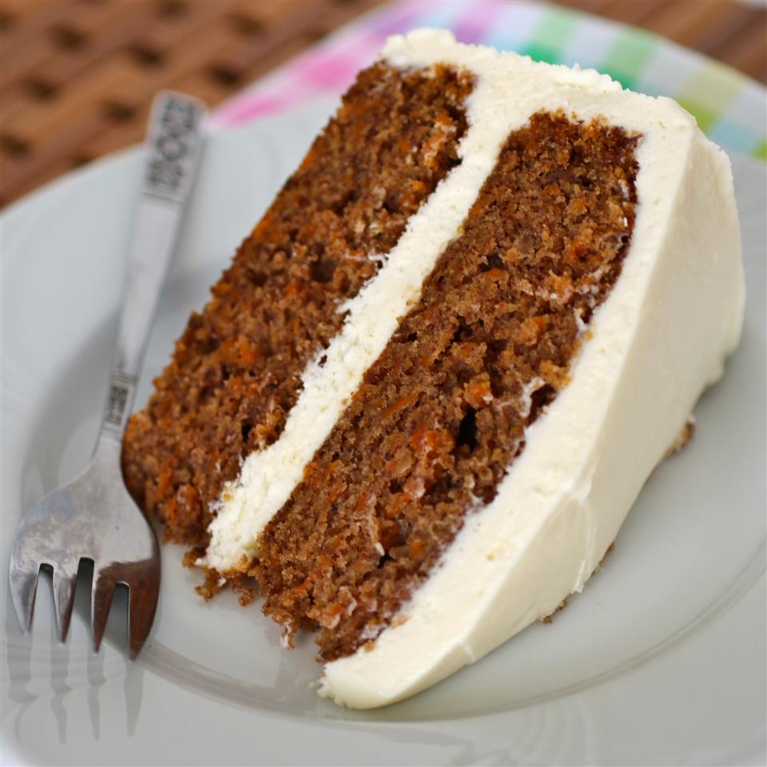

Cream Cheese Frosting

This is a wonderfully creamy frosting that goes well with pumpkin bread, carrot cake, chocolate cake, on cookies, or between cookies. If you want chocolate frosting, add 1/4 to 1/2 cup cocoa, according to how rich you want it.
Ingredients
- 2 (8 ounce) packages cream cheese, softened
- 1/2 cup butter, softened
- 2 cups sifted confectioners' sugar
- 1 teaspoon vanilla extract
Steps
- In a medium bowl, cream together the cream cheese and butter until creamy. Mix in the vanilla, then gradually stir in the confectioners' sugar. Store in the refrigerator after use.